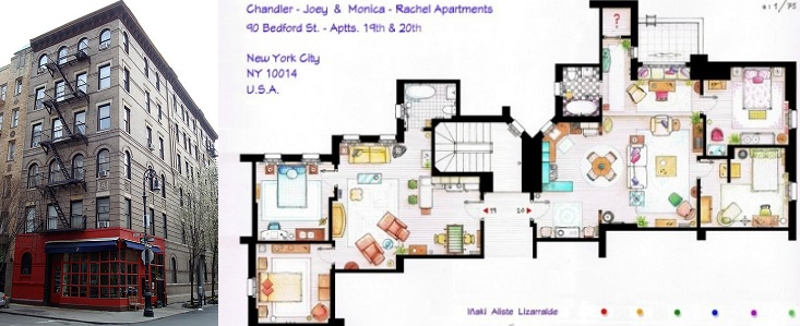
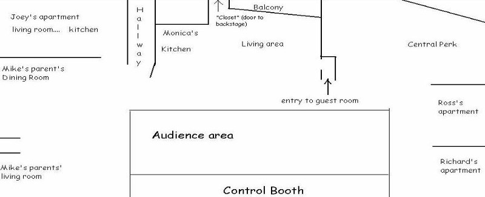
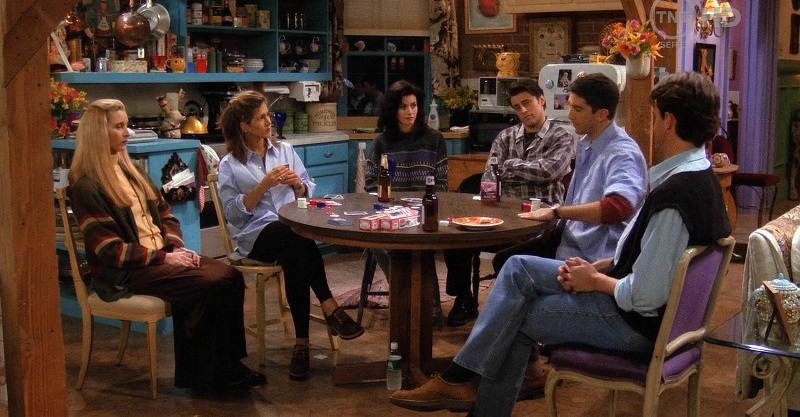
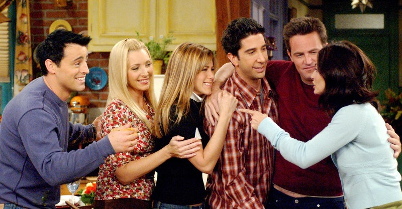
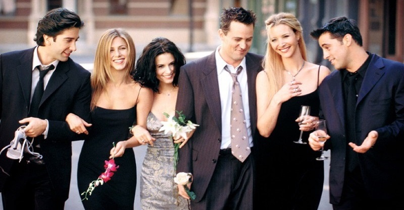

Produção e filmagem
Friends foi produzida por Bright, Kauffman, Crane Productions em associação com a Warner Bros Television. Os produtores executivos originais foram David Crane, Marta Kauffman e Kevin S. Bright.
Kauffman e Crane começaram a desenvolver Friends sob o título de Insomnia Café em novembro de 1993. Apresentaram a ideia a Bright, com quem tinham trabalhado anteriormente, e, juntos, apresentaram o projeto para a NBC. Após várias alterações de roteiro e mudanças de nome, a série foi nomeada de Friends e estreou no bloco Must See TV da NBC.
As filmagens para a série começaram no verão de 1994 no Estúdio 5 do Warner Bros Studios em Burbank na Califórnia, em frente a uma platéia ao vivo. Executivos da NBC estavam preocupados que a decoração do café Central Perk era muito de estilo ‘hip’ e solicitaram que a série fosse filmada em um restaurante, mas acabaram por aceitar o conceito de coffee house.
No início da segunda temporada, a produção mudou-se para o Estúdio 24, que foi renomeado para The Friends Stage.
O último episódio da quarta temporada foi filmado em Londres, porque os produtores estavam cientes da popularidade da série no Reino Unido. As cenas foram filmadas em um estúdio com três platéias, cada uma composta por 500 pessoas.
O final da quinta temporada, que se passa em Las Vegas, foi filmado no estúdio da Warner Bros, apesar de Bright ter encontrado pessoas que pensavam que os episódios tinham sido filmados em Vegas.
Cada episódio, com duração aproximada de 22 a 23 minutos, levou em torno de cinco horas para ser filmado, o dobro da maioria das gravações de sitcoms, principalmente devido às várias revisões e reescritas dos roteiros.
Embora os produtores quisessem mostrar a história como se os atores estivessem no local, Friends nunca foi filmada em Nova York. Bright achava que as filmagens de episódios feitas fora do estúdio eram menos engraçadas e que a platéia ao vivo era uma parte integrante da série. Quando a série foi criticada por representar Nova York incorretamente, como por exemplo, que o grupo de amigos não teria condições de arcar com as despesas de apartamentos grandes em Greenwich Village, Bright afirmou que o set tinha que ser grande o suficiente para as câmeras, iluminação, para que o público pudesse ver o que estava acontecendo, e para que os atores pudessem executar as cenas de comédia.
Curiosidades
- Antes de ser nomeada de Friends, a série já recebeu alguns outros nomes como Insomnia Café (Café da Insônia), Friends Like Us (Amigos Como Nós) e Six of One (Seis de Um);
- Com exceção do episódio piloto e o episódio final (intitulado The Last One), todos títulos dos episódios se iniciam com "Aquele com...";
- Inicialmente, a música eleita para ser tema da série foi Shiny Happy People (REM). Mais tarde, os produtores decidiram por I’ll Be There For You (Rembrandts);
- A cena de abertura da série foi gravada nos estúdios da Warner Bros, por volta das 4 horas da manhã, durante o inverno, e a água da fonte teve que ser aquecida para produção da cena;
- O Central Perk foi inspirado no Manhattan Café que fica em West Village, Nova York;
- O famoso sofá laranja no Central Perk foi encontrado no porão do estúdio da Warner Bros., em Burbank, onde a série era gravada, e apesar de ninguém ter instituído que apenas os seis amigos poderiam sentar nele, todos os roteiristas seguiam essa regra;

- O prédio em que moravam Monica, Rachel, Chandler e Joey realmente existe e fica em Bedford Street, em frente a um teatro chamado Lucille Lortell, em Nova York. Apesar de todos os interiores serem filmados em estúdio, a fachada era original;
 - No set, o apartamento de Susan e Carol se alternava com o de Joey e Chandler, dependendo das cenas que precisavam ser feitas no dia. O apartamento de Phoebe era montado no lugar do de Mike, e o armário secreto da Monica era nada menos do que uma porta que dava acesso aos bastidores do programa;
 - O apartamento da Monica mudou do número 5 para o número 20 para parecer que estava em um andar mais alto. O de Chandler e Joey também mudou de 4 para 19 para seguir a lógica;
- Na série, Ross chegou a dizer que tinha 29 anos na 3ª, na 4ª e na 5ª temporada;
- O enredo dos trigêmeos de Phoebe só aconteceu porque a atriz estava grávida na vida real;
- Marcel, o macaco de estimação de Ross, na verdade era uma macaca que, fora das gravações, atendia pelo nome de Katie;
- A estátua do cachorro branco que Joey comprou, em seus dias de glória como ator, pertencia originalmente à Jennifer Aniston e foi presente de uma amiga quando ela começou a atuar;
- Segundo Lisa, o produtor James Burrows teve a ideia de emprestar sua mesa de pôquer e incentivá-los a jogar juntos, a fim de criar laços entre os atores. Essa experiência foi a inspiração para um dos primeiros episódios da série, “Aquele com o Pôquer”;
 - James Tyler, que interpretava Gunther, trabalhava como barista quando foi escolhido para fazer parte do elenco. Ironicamente, ele nunca fez um único café em cena e apenas servia os personagens no estabelecimento;
- Lisa Kudrow teve dificuldade para aprender a tocar violão, sendo um instrumento que ela não gostava. Assim, aprendeu apenas o básico, o que era também uma característica de Phoebe, que não fazia suas músicas com muita perfeição;
- Os desenhos e mensagens deixados no quadro na porta do apartamento de Joey eram feitos por um membro da equipe chamado Paul Swain;
- O episódio The One After Vegas (6ª temporada) foi dedicado a Courteney Cox e David Arquette, que haviam se casado. Nos créditos iniciais, todos os membros do elenco e da produção tiveram o sobrenome Arquette adicionado ao final de seus nomes;
- Courtney Cox havia sido originalmente escolhida para interpretar Rachel, mas pediu para mudar de personagem porque gostou muito da personalidade marcante de Monica;
 - David Schwimmer, que interpretava Ross, dirigiu 10 episódios da série;
- O episódio final da série Friends foi o quarto episódio mais assistido da TV americana, com 52,5 milhões de telespectadores;
- Ao longo de suas 10 temporadas, Friends teve mais de 50 participações especiais, entre elas: George Clooney, Susan Sarandon, Julia Roberts, Reese Witherspoon, Robin Williams, Sean Penn, Charlton Heston, Helen Hunt, Alec Baldwin, Ellen Pompeo, Christina Applegate, Hugh Laurie e Brad Pitt;
- Friends foi indicada 63 vezes para o Emmy, mas só ganhou 3 estatuetas. Em 1998, Lisa Kudrow foi eleita melhor atriz. Em 2002, foi a vez de Jennifer Aniston. Finalmente, em 2003, a série levou o prêmio de melhor comédia do ano;
- Em seus contratos originais para a primeira temporada, cada membro do elenco era pago US$ 22.500 por episódio. Os membros do elenco receberam salários diferentes na segunda temporada, entre US$ 20.000 e US$ 40.000 por episódio. Para a terceira temporada, o elenco decidiu entrar em negociações coletivas, apesar da preferência do Warner Bros por ofertas individuais, sendo pagos, por episódio, US$ 75.000 na terceira temporada, US$ 85.000 na quarta temporada, US$ 100.000 na quinta, US$ 125,000 na sexta temporada, US$ 750.000 na sétima e na oitava temporada, e 1 milhão de dólares por episódio na nona e décima temporadas;
 - Todo o elenco fez uma viagem a Las Vegas antes da série ir ao ar. A ideia partiu do diretor James Burrows, que convenceu os atores a fazerem uma última viagem antes de se tornarem famosos;
- Para o lançamento do Windows 95, Bill Gates contratou Jennifer Aniston e Matthew Perry para participarem do tutorial que ensinava a utilizar o sistema operacional, sendo que ambos interpretaram seus papéis de Friends (confira um trecho ou o vídeo completo).